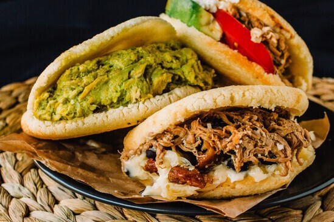

Arepa Venezolana

Ingredientes
- Dos tazas de harina de maíz para 4 personas a 2 o 3 arepas por persona
- Una cucharadita de sal
- Agua tibia
- Leche tibia (opcional)
- Una cucharadita de mantequilla (opcional)
Pasos para la Receta
- La receta tradicional de arepas únicamente requiere de harina de maíz, agua y sal, por lo que además de resultar deliciosas no contienen gluten, por lo que son perfectas para celiacos. Sin embargo si deseas obtener una masa mucho más suave y sabrosa puedes añadir a la mezcla un poco de leche y una cucharadita de mantequilla. Tus arepas quedarán sencillamente deliciosas.
- La masa de arepa siempre debe quedar suave y fácil de moldear, si la misma queda dura el resultado final será también una arepa dura y difícil de disfrutar y digerir.Para conseguir que tus arepas queden suavecitas y ricas, comienza por mezclar una taza y media de agua tibia con media taza de leche completa, desnatada o deslactosada (como prefieras). Añade la cucharadita de sal y revuelve. Si lo deseas puedes prescindir de la leche y usar entonces únicamente dos tazas de agua.
- Añade la mantequilla si quieres darle más sabor a la masa. Luego ve añadiendo poco a poco la harina de maíz mientras vas mezclando con la mano. No lo hagas todo de golpe o corres el riesgo de que la masa te quede muy dura. Deja de echar la harina en el momento en el que la masa esté compacta pero aún suave y fácil de moldear. Si sientes que ha quedado demasiado dura basta con agregar un poco más de líquido.
- Enciende el horno a 250 ºC para precalentarlo y, en simultáneo, coloca una sartén antiadherente a fuego medio para que se vaya calentando, no hace falta añadir aceite. Llega el momento de hacer las arepas. Realiza bolas con la masa que luego deberás aplastar suavemente hasta formar una especie de pan redondo de aproximadamente un dedo de grosor. El tamaño de la arepa será básicamente el que desee el cocinero.
- Coloca las arepas en la sartén a fuego medio bajo con el fin de que se doren y se sellen externamente. Es importante que no las hagas a fuego muy alto pues se quemarán por fuera y quedarán crudas por dentro. Una vez doradas y selladas, introdúcelas en el horno por 5 minutos en cada lado. Aunque muchas personas omiten este paso y las hacen únicamente en la sartén, este toque final permite que las arepas queden crujientes por fuera y suaves y cocinadas por dentro.
- Cuando tus arepas estén duritas y doradas por fuera estarán listas para ser consumidas. Ahora solo falta abrirlas y rellenarlas con lo que quieras: jamón y queso, pollo, carne. Hay una larga lista de deliciosas posibilidades para hacer una comida exquisita y muy completa. ¡Buen provecho!
Deja tu comentario
Cargando comentarios...